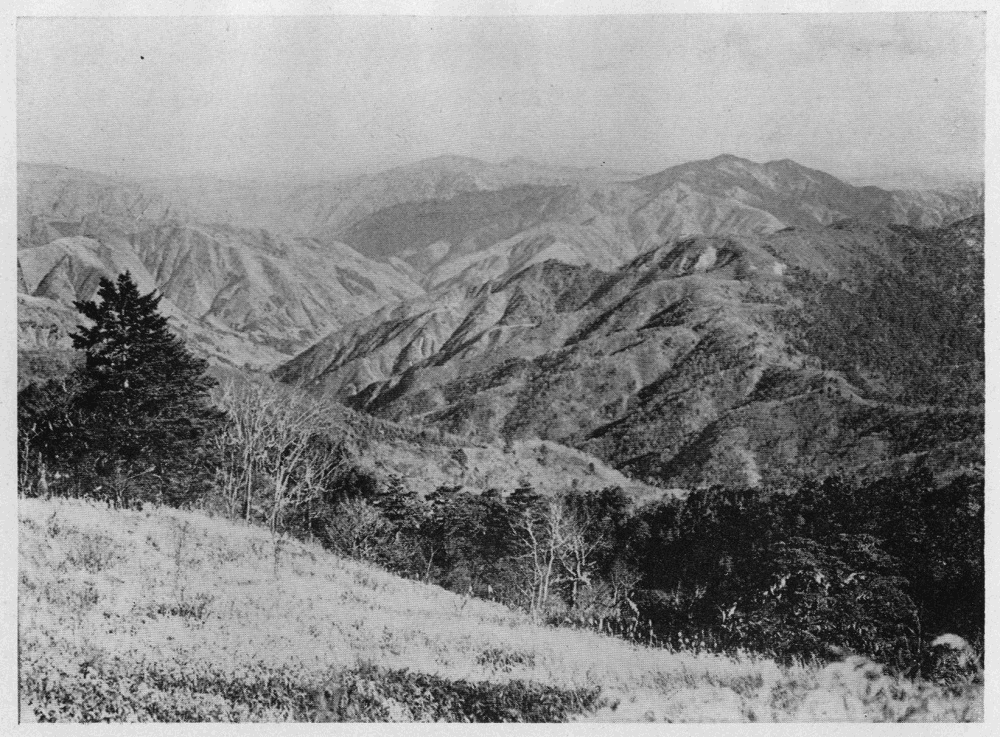

秩父の数多い山の中で、高さに於ても姿に於ても、
金峰山は一際すぐれて群を抜いている。御室から登る五十町の峻坂は、岩といい樹といい、如何にも山らしい感じを与えるので、決して飽きることのない路である。絶頂の五丈石は、よしや下から眺めて期待した程のものでないにしても、三角点を中心として縦横に重なり合っている大きな岩塊は、高山の生れたままの荒っぽい一面を偲ばせるものがあると共に、一方には
又あの緑の
毛氈を敷いたような
岩高蘭と
苔桃の軟い
茵に、慈母の優しいふところを思わせる親しさがある。未だ若い山登りの初心者として、はじめて金峰山の頂上に立った私は、抑え難い衝動から、いきなり五丈石に攀じ登って、誇らかに昂ぶる心を満足させたのであった。そして岩を下りると、小さい灌木の青い茵にふっくりと身を埋めて、ごろりと寝ころんだまま長い間空を見詰めていた。
其時私はふと今まで気が付かなかった不思議な問題にぶつかったのである。立山の絶頂では、
室堂をすぐ脚の下に眺めながら、なぜあのように淋しい頼りない思いに堪え兼ねて
惶しくかけ下りたのか。乗鞍岳の絶頂では、一夜を立ち
明していながら、朝になってなぜ物に怯えたようにして、一歩は一歩と人里に近づくのを喜んだのか。木曾の御岳でも駒ヶ岳でも、絶えずささやかな、それでいて直ぐ心の平衡の破れるような、不安に襲われていたことを覚えている。それであるのに金峰山の頂上では、岩に登ったり草に寝ころんだりして、ゆったりした気持で、ぼんやり空を眺めている自分を見出したのである。これは又何たる相違であろう。
斯くて始めて私は山の威圧というものをしみじみと感得した。山が大きければ大きい程威圧も強いのであろう。そして金峰山こそはその当時の私にとって最もふさわしい山であったに違いなかった。山を味うことを教えて
呉れた山、懐かしい金峰山、これが秩父の山から最初に受けた私の忘れ難い印象である。
しかしまだ私は後になって秩父の誇るべき特色の一であると信ずるに至った深林に対して、何等の知る所がなかった。それは深林を見なかったことを意味するのではない。見ない所か、金峰山の
椈や
米栂の美林、今ではもう昔の面影をしのぶたよりさえない
川端下や梓山の戦場ヶ原の唐松林、十文字峠途上の昼
尚お暗い針葉闊葉の見事な林、皆其中を歩いた
許りでなく、
白妙岩の上からは、赤沢のもくもくと盛り上った闊葉樹林の緑の波を脚下に俯瞰したのであった。が、伯楽でなければ千里の駿足を
冀北の野から拾い出せない。凡眼には名家の手に成る絶大の大作も反古紙と同様である。私の盲いた目には、秩父の森林美も、あわれ名物狼餅ほどにも感じなかったのである。全く森林の美しさをはっきり知るようになったのは、渓に入ることを覚えてからであった。
想えば私の登山慾は、明治三十八、九年をさかいとして
稍間歇的になった。それが二、三年の後
田部君と識るようになって、
復ぶり返した形である。同君は初め海の讃美者であった。夏休みが終ると、よく愉快だった海の旅の話を
齎して私の下宿を訪れた。其の時の私の山の話も同君の感興を
唆ったことは、幾程もなく同君が熱心な山岳宗徒になったことに徴して、疑う余地がないようである。其後二人は一年許り同じ下宿屋に居ったので、日曜日には必ず草鞋ばきで握飯を携え、早朝から近郊を歩き廻ることにしていたが、終には東京附近の目星しい場所は行き尽してしまった。かくて秩父の山地に二人の足が向うようになったのは必然的の運命であったのである。
明治四十二年の五月下旬、二人は雲取山に登る目的で小仏峠から武相の国境山脈を歩き出した。私の山登りはいつもきまった一人旅であったから、其点からもこれは私に取って記念すべき旅であったと云える。途中栗坂峠の附近で野営し、翌日
三頭山の登りにかかった頃から雨に降られて、鶴川の畔の原村に下った。杉木立に囲まれて鎮守の社がある。雲を吐く老杉の梢では
四十雀が
頻に囀り、清い谷川の水が其
側をゆたかに流れ、朱色の
躑躅の花が燃え上る炎のように木の下闇を照していた。昼食を炊いて貰おうとして、蚕で忙しい村人の素気ない挨拶に、暗い顔をしていた二人の心もこれで明るくなった。
雨でぬかる大羽根峠を越えて長作に出で、鶴川に沿うて溯ると、到る所の水崖に藤は紫の房を垂れ、
卯の花は雪をこぼしている。鶴峠を上って白沢に下りる道の傍に新しい小学校があって、庭の八重桜は未だ花をつけていた。白沢のとある人家の高い杉の木を縫うて、白い藤の花が梢近くまで咲き続いていた美しさには、思わず足を止めて見恍れた。道はいつしか小菅川に沿うて水と共に下るようになる。両岸の山は春雨とまがう糸のように細い雨に煙って、墨絵のようにぼうと滲み出す、祠などがあると二、三株の松が墨痕
鮮に描き出される。若い女の歌う声が何処かで聞えたと思う間もなく、思いも寄らぬ岨路から、手拭を冠った桑摘乙女の姿が現れて来る。
時鳥が鳴く、鶯が囀る、旅の興は汲めども尽くる所を知らないという有様であった。

●御前山と三頭山（大菩薩峠附近より）
明くる日は日本晴れの上天気で、前日の雨に少し水の増した多摩川の流れは、
稍瀬の音が高い。川野の宿を立って小袖川の落口まで来ると、二人は云い合わしたようにそこに架けられた橋の欄干にもたれて、見るともなく其辺を見廻した。橋には境橋と書いてある。
之を渡れば武州を離れて甲州の地に入るのだと想うと、長い道中を続けて来た旅人のような気がして、淡い旅愁というような感じに浸るのが嬉しかった。田部君も同じ様なことを思っていたらしい。橋の上手には一本の丸太の端に水舟と杵とを持った水力応用の
米舂小屋があって、水舟に水が溜ると舟は下って杵が上る、とたんに水がざあとこぼれて杵が米や麦を
搗く、それが
長閑に
ぎいばたんと音を立てている。朝風に散る山吹の花が二片三片水に落ちて、白い泡と共に流れて行く。二人とも口をきかない、
唯黙っていつまでもいつまでも川に見入っていた。二人の心は昨日から著しく感傷的になっていたに相違ない。ここで誰か一言ものを云えば、二人の目からは涙が流れたであろう、恐らく。
この時程私は渓川から強い刺戟を受けたことはない。この時程私は渓川に対して限りなき愛着の念を抱いたことはない。
ふと私の思いは二十年の昔に遡って、郡内から小仏峠を
踰えた時の光景がまざまざと眼底に浮んで来た。やはり五月のよく晴れた日であった。桐の花が真盛りで、樹の下には落ちた花を拾って、同じ木の大きな葉に盛りながら、ままごと遊びに余念のない少女の群もあった。畑の中の一本の大きな花桐には、測量の為であろう紅白の旗が竿の先に
翻っていた。路並の茅葺屋根には、棟に
鳶尾か菁莪らしいものが青々と茂って花が咲いていた。其蔭で猫が昼寝していることなどもあった。人通りの少い路の上を、低く燕がすういと飛んで来てはひらりと返して行く。賑やかな
梭の音に交って、歌や笑い声が洩れて来る。
これから秩父の旅が続けられるようになった。それはいつも五月で、渓を遡るか又は帰り路を渓に取った。其の間に秋の秩父を探り、冬の秩父を眺めたこともない訳ではなかったけれども、私の主たる目的ではなかった。そして私はゆかしい苔の匂いと木の香とに満ちた奥深い森林を、山肌を飾る万年雪の輝きや草原を彩る美しいお花畑が日本アルプスの特色であるように、唯一の秩父の特色であると信ずるに至ったのである。森林あるが為めに渓は
愈々美しく、渓に由りて森林は
益々其奥深さを増して行く。
若し秩父の山に、日本で見られる最大限の高山相を要求する人があるならば、其人は失望するであろう。新緑もゆる陽春五月、渓川に沿うた森林のさまよい歩き、それが情緒的であり、女性的である秩父の特色を知るには、最もよい方法であるといわなければならぬ。
（昭和三、一二『霧藻』）